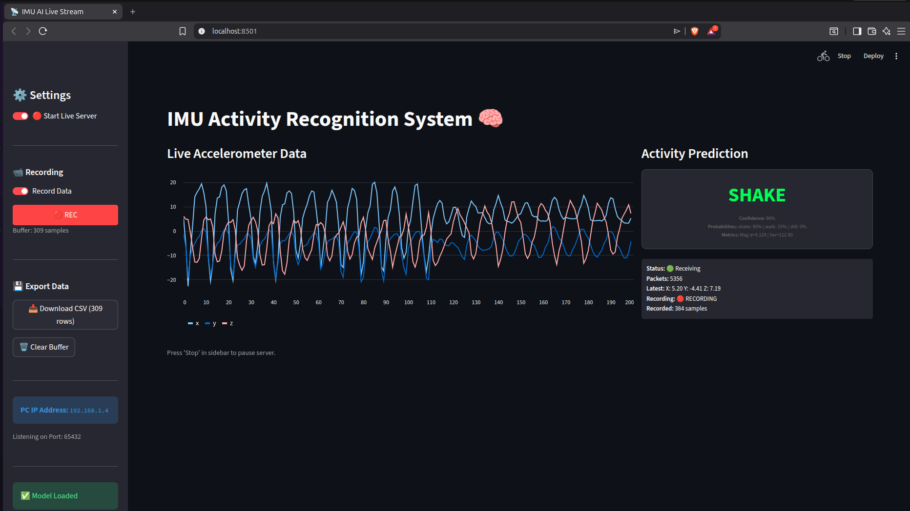
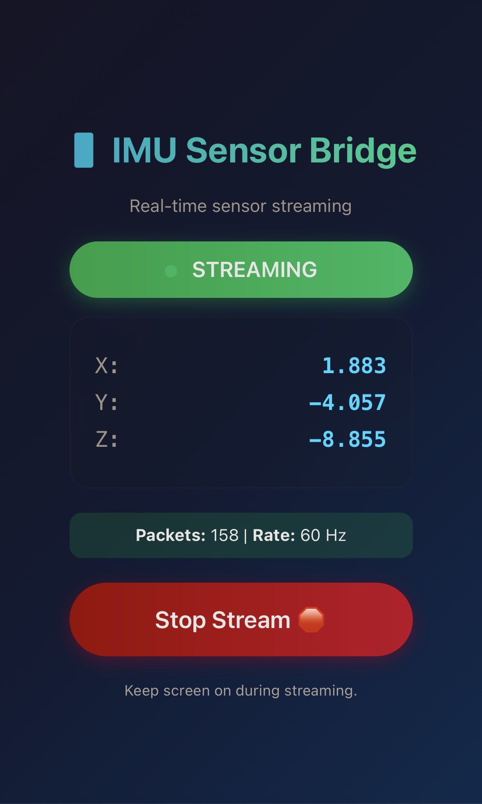

This section demonstrates the live deployment of the trained model using a WebSocket-based architecture for low-latency inference.
Below are the views for the PC Dashboard and the Mobile Sensor Interface.

